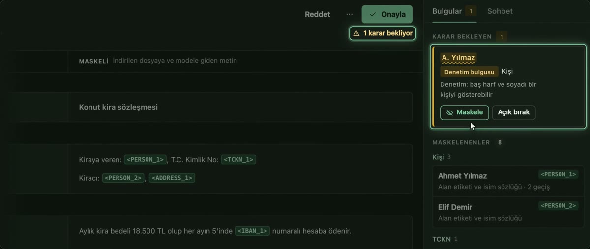

Önce maskele. Sonra sor.
Şirket dokümanlarınızı Claude'a ya da ChatGPT'ye sormadan önce hassas bilgileri bilgisayarınızda maskeleyin. Müşteri ve yetkili adları, e-posta, IBAN ve vergi numaraları etiketlere dönüşür; gerçek değerler bilgisayarınızda kalır, gidecek metni önce siz onaylarsınız.
v0.1.2 yayımlandı. DMG ve ZIP paketleri, kurulum notlarıyla birlikte aşağıda.
Şirket dokümanlarını Claude'a ya da ChatGPT'ye sormak istiyorsunuz. Ama içinde müşteri, yetkili ve banka bilgileri var.
Bu metni olduğu gibi buluta göndermek KVKK ve ticari gizlilik açısından risk. Screenwall önce maskeler; Claude ya da ChatGPT'ye yalnız etiketli metin gider, o da sizin onayınızla.
Beş adım. Tespit ve denetim bu bilgisayarda.
- 1
Belgeyi yükleyin.
PDF, Word ya da Excel. Belge bu bilgisayarda işlenir; hiçbir yere gönderilmez.
- 2
Hassas bilgiler bulunur ve etiketlenir.
Şirket unvanı, yetkili adı, e-posta, IBAN ve vergi numarası <ORG_1>, <PERSON_1> gibi etiketlere dönüşür. Tutarlar ve metin okunur kalır.
- 3
Lokal LLM denetler.
Maskeli kopya, kural kontrolleri ve Ollama üzerinde çalışan lokal LLM (Qwen 3.5 4B) ile denetlenir. İkisinin de temiz demesi gerekir.
- 4
Şüphede karar kullanıcının.
Denetçi emin değilse belge kendiliğinden onaylanmaz. İnceleyip maskeleyin ya da açık bırakın; son kopyanın yine lokal LLM denetiminden geçmesi gerekir.
- 5
Maskeli belgeyi kullanın.
Onaydan sonra maskeli metinden üretilen PDF'yi indirin ya da lokal LLM'e sorun. İsteğe bağlı olarak Claude (Claude Code) ya da ChatGPT (Codex CLI) ile sohbet edin; gidecek metni her soruda inceleyip onaylarsınız.

Sizin belgeniz, sizin bilgisayarınız, sizin kararınız.
Bu bilgisayarda çalışır
Tespit, maskeleme ve denetim bu bilgisayarda yapılır. Orijinal belge dışarı çıkmaz.
Şüphede durur
Emin olmadığında belgeyi onaylamaz; size sorar.
Gideni önce gösterir
Buluta bir şey gidecekse, gidecek metnin tamamını önce gösterir ve açık onay ister.
API anahtarı saklamaz
İsteğe bağlı bulut sohbeti kendi Claude Code ya da Codex (ChatGPT) oturumunuzla çalışır; Screenwall API anahtarı saklamaz.
Örnek belgelerle test ettik.
60 belgelik geliştirme setindeki 489 kritik değerin 472'si yakalandı. Kural ve tespit ölçümü; bu koşuda lokal LLM kapalıydı.
Lokal LLM denetimi açıkken yapılan 72 stres belgesinde onaylanan çıktıya hassas bilgi sızmadı.
Hassas bilgi içermeyen 40 iş cümlesinin 11'inde gereksiz maskeleme yaptı. Bilinen kusurumuz; üzerinde çalışıyoruz.
Kendi ölçümlerimiz; kuralların ayarlandığı geliştirme setini kullanıyoruz. Aynı setin kendi puanlayıcımızdaki sonucu 1555/1555. Lokal LLM'li stres testinde 62 güvenli belgenin 59'u onaylandı; üçü incelemede kaldı. Bağımsız, hiç görülmemiş bir test seti henüz yok. Tüm sayılar ve yöntem: SCORECARD.
Maskeleme kusursuz değildir. Cümle içindeki büyük harfli adlar, bazı adresler ve meslek, eğitim veya maaş gibi bilgiler açıkta kalabilir. Paylaşmadan önce maskeli kopyayı kontrol edin.
Screenwall'ı indirin.
Önerilen kurulum: DMG dosyasını açın ve Screenwall'u Uygulamalar klasörüne sürükleyin. İlk açılışta çalışma ortamı hazırlanır; arayüz tarayıcınızda açılır.
- macOS 14 (Sonoma) veya üstü; Apple Silicon ve Intel.
- Ollama ve qwen3.5:4b modeli gerekir (yaklaşık 3,4 GB). Ollama kuruluysa model ilk açılışta indirilir. Ollama olmadan belgeler maskelenebilir; ancak onaylanamaz, indirilemez ve üzerlerinde sohbet edilemez.
- Uygulama Apple tarafından imzalanmadı; ilk açılışta macOS uyarı verir. Uygulamaya sağ tıklayıp Aç'ı seçin; macOS 15 ve sonrasında Sistem Ayarları › Gizlilik ve Güvenlik › Yine de Aç. macOS geliştirici araçlarını yüklemeyi önerirse Vazgeç'e basın; gerekmez.
- İlk kurulum ve yeni sürüm hazırlığı internet gerektirebilir. Taranmış PDF sayfalarını okumak için isteğe bağlı Tesseract gerekir.
- Intel Mac'te Ollama ile belge onayı henüz denenmedi; lokal LLM denetimi işlemciyle çalışır ve daha yavaş olabilir.
Alternatif indirmeler ve kurulum notları.
Bugün Claude sohbeti kendi Claude Code oturumunuzla, ChatGPT sohbeti Codex CLI oturumunuzla çalışır. Screenwall doğrudan Claude API'yi çağırmaz. Kullanıcı onayını koruyan bir API bağlantısı geliştirmeyi planlıyoruz; bu henüz mevcut bir özellik değildir.